Plotting
Overview
Teaching: 25 min
Exercises: 15 minQuestions
How can I plot my data?
How can I save my plot for publishing?
Objectives
Create a time series plot showing a single data set.
Create a scatter plot showing relationship between two data sets.
matplotlib is the most widely used scientific plotting library in Python.
- Commonly use a sub-library called
matplotlib.pyplot. - The Jupyter Notebook will render plots inline if we ask it to using a “magic” command.
%matplotlib inline
import matplotlib.pyplot as plt
- Simple plots are then (fairly) simple to create.
import numpy
time = numpy.array([0,1,2,3])
position = numpy.array([0,100,200,300])
plt.plot(time, position)
plt.xlabel("Time (hr)")
plt.ylabel("Position (km)")
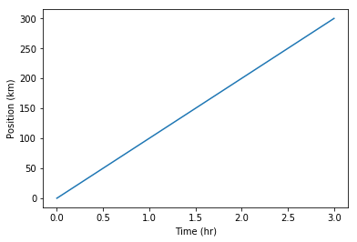
The color and format of lines and markers can be changed.
- A shortcut for simple formatting is to use the third argument string.
- ‘b-‘ means blue line, ‘ro’ means red circles, ‘g+-‘ means green + with a line
import numpy
time = numpy.arange(10)
p1 = time
p2 = time*2
p3 = time*4
plt.plot(time, p1,'b-')
plt.plot(time, p2,'ro')
plt.plot(time, p3,'g+-')
plt.xlabel("Time (hr)")
plt.ylabel("Position (km)")
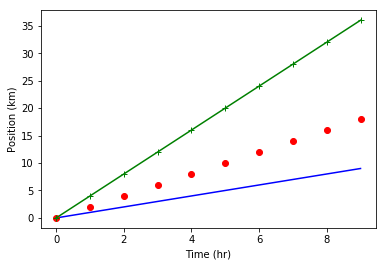
More complex formatting can be achieved using the plot keywords
linewidthcontrols the thickness of the linelinestylecontrols the type of linemarkercontrols the shape of the markercolorcontrols the color of the line and markerlabelcontrols the labelling of the line for use withplt.legend
plt.plot(time, p1,color='blue', linestyle='-', linewidth=5,label="blue line")
plt.plot(time, p2,'ro', markersize=10, label="red dots")
plt.plot(time, p3,'g-', marker='+')
plt.xlabel("Time (hr)")
plt.ylabel("Position (km)")
plt.legend()
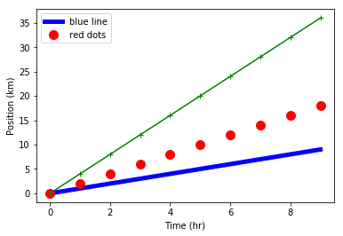
Built in “styles” provide consistent plots
print("available style names: ", plt.style.available)
available style names: ['_classic_test', 'bmh', 'classic', 'dark_background', 'fast', 'fivethirtyeight', 'ggplot', 'grayscale', 'seaborn-bright', 'seaborn-colorblind', 'seaborn-dark-palette', 'seaborn-dark', 'seaborn-darkgrid', 'seaborn-deep', 'seaborn-muted', 'seaborn-notebook', 'seaborn-paper', 'seaborn-pastel', 'seaborn-poster', 'seaborn-talk', 'seaborn-ticks', 'seaborn-white', 'seaborn-whitegrid', 'seaborn', 'Solarize_Light2', 'tableau-colorblind10']
plt.style.use("ggplot")
plt.plot(time, p1,color='blue', linestyle='-', linewidth=5,label="blue line")
plt.plot(time, p2,'ro', markersize=10, label="red dots")
plt.plot(time, p3,'g-', marker='+')
plt.xlabel("Time (hr)")
plt.ylabel("Position (km)")
plt.legend()
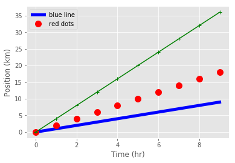
plt.style.use("fivethirtyeight")
plt.plot(time, p1,color='blue', linestyle='-', linewidth=5,label="blue line")
plt.plot(time, p2,'ro', markersize=10, label="red dots")
plt.plot(time, p3,'g-', marker='+')
plt.xlabel("Time (hr)")
plt.ylabel("Position (km)")
plt.legend()
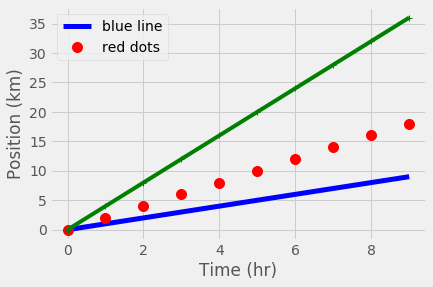
plt.style.use("seaborn-whitegrid")
plt.plot(time, p1,color='blue', linestyle='-', linewidth=5,label="blue line")
plt.plot(time, p2,'ro', markersize=10, label="red dots")
plt.plot(time, p3,'g-', marker='+') #where's the marker?
plt.xlabel("Time (hr)")
plt.ylabel("Position (km)")
plt.legend()

Plots can be scatter plots with points and no lines
numpy.random.seed(20)
x,y = numpy.random.randint(0,100,100), numpy.random.randn(100)
x=numpy.cumsum(x)
y=numpy.cumsum(y)
plt.scatter( x, y)
plt.scatter( x, 10-y**2, color='green',marker='<')
plt.xlabel("Labels still work")
plt.title("title")

matplotlib also makes bar charts and histograms
- If you have data grouped into counts already,
barcan make a chart - If you have raw data,
histcan calculate and plot the histogram.
x = [0,1,2,3,4,5]
y = [0,4,2,6,8,2]
plt.bar(x,y)
plt.title("Bar chart")
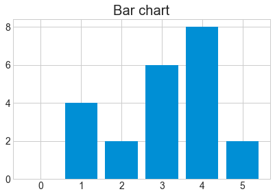
x = numpy.random.randint(0,100,50)
bin_count, bin_edges, boxes = plt.hist(x, bins=10, rwidth=0.9)
print("The counts are ", bin_count)
The counts are [4. 3. 7. 6. 6. 4. 4. 4. 7. 5.]
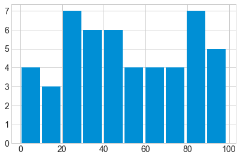
# Compute pie slices
N = bin_count.size
theta = 0.5*(bin_edges[1:] + bin_edges[:-1])
theta = theta * 2*numpy.pi/theta.max()
width = numpy.pi / 4 * numpy.random.rand(N)
ax = plt.subplot(111, projection='polar')
bars = ax.bar(theta, bin_count, width=width, bottom=0.0,alpha=0.5)
# Use custom colors and opacity
for r, bar in zip(bin_count, bars):
bar.set_facecolor(plt.cm.viridis(r / bin_count.max()))
bar.set_alpha(0.5)
t=plt.title("Something more exotic")
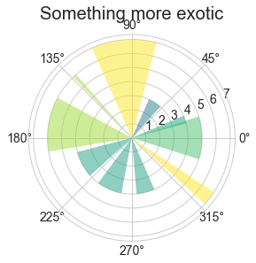
Define the figure size before plotting using the figure command
plt.figurepre-defines a figure for you- The keyword
figsizetakes two values to define the width and height
plt.figure(figsize=(8,2))
x = [0,1,2,3,4,5]
y = [0,4,2,6,8,2]
plt.bar(x,y)
plt.title("narrow bar chart")
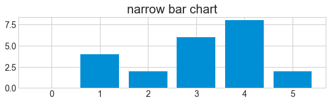
Place multiple figures on one plot with subplot
plt.subplottakes three arguments : (number_of_rows, number_of_columns, location)
plt.figure(figsize=(8,2))
x = [0,1,2,3,4,5]
y = [0,4,2,6,8,2]
plt.subplot(2,2,1)
plt.bar(x,y)
plt.title("top left")
plt.subplot(2,2,2)
plt.bar(y,x)
plt.title("top right")
plt.subplot(2,2,4)
plt.bar(x,y)
plt.title("sometimes the formatting is awkward")
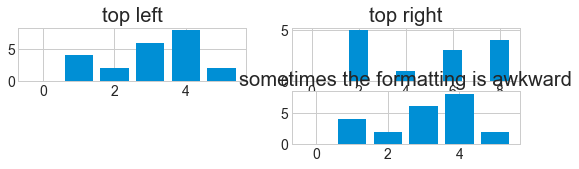
It’s easy to put too much data into a figure and make it unreadable! Make sure there is enough space to see all of the elements in the plot.
plt.figure(figsize=(8,6))
x = [0,1,2,3,4,5]
y = [0,4,2,6,8,2]
plt.subplot(2,2,1)
plt.bar(x,y)
plt.title("top left")
plt.subplot(2,2,2)
plt.bar(y,x)
plt.title("top right")
plt.subplot(2,2,4)
plt.bar(x,y)
plt.title("less awkward")

Saving your plot to a file
- After plotting, use
plt.savefigto save the figure to a file - The figure size you specified is (approximately) the size in inches.
- For PNG/JPG images you can specify the resolution with
dpi
plt.figure(figsize=(8,3))
plt.plot(x,y)
plt.savefig("data/fig1.pdf") #PDF format
plt.savefig("data/fig1.png", dpi=150, transparent=True) #PNG format
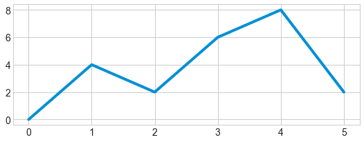
Note that functions in
pltrefer to a global figure variable and after a figure has been displayed to the screen (e.g. withplt.show) matplotlib will make this variable refer to a new empty figure. Therefore, make sure you callplt.savefigbefore the plot is displayed to the screen, otherwise you may find a file with an empty plot.It is also possibile to save the figure to file by first getting a reference to the figure with
plt.gcf, then calling thesavefigclass method from that variable.fig = plt.gcf() # get current figure data.plot(kind='bar') fig.savefig('my_figure.png')
Key Points
matplotlibis the most widely used scientific plotting library in Python.Plot data directly from a Pandas dataframe.
Select and transform data, then plot it.
Many styles of plot are available: see the Python Graph Gallery for more options.
Can plot many sets of data together.